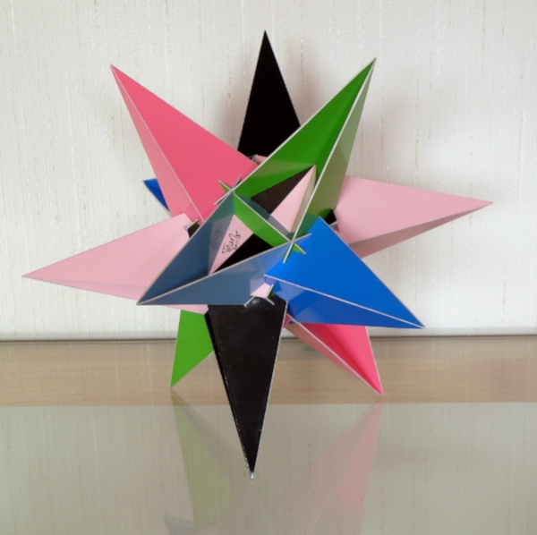

An Inverted Star of Heptagons with A4xI Symmetry

This model was built in 2011 and its dimensions is around 25 cm x 25 cm x 25 cm.
This polyhedron only consists of regular heptagons that are folded over a diagonal. There are different ways in which you can fold a regular heptagon and for this polyhedron the folding is done in a 'shell' shape. Together with the 'W' fold these seem to give the best results of polyhedra with regulare folded heptagons. Here, by gluing two neighbouring edges together, the heptagons are folded into a roof of a pyramid with one side pushed inside. These are positioned on a base poyhedron, but instead of pointing towards the outside they point inwards; so much that they stick out on the other side.
The polyhedron has the same rotational symmetry as a tetrahedraon, however a central inversion is included to the symmetry group (which a tetrahedron doesn't have).
For most of the polyhedra I didn't really proof that the heptagons are really regular. For this one I did put together a proof that there should be a solution for a regular heptagon. This means that I didn't proof it by a direct algebraic calculation. Instead I showed that for heptagons this kind of polyhedron can be obtained and that there is no singularity for the regular heptagon.
If you compare the paper model with the model in the 3D player on the right, you should be able to see that I actually cheated a bit. I left out some small parts. These weren't essential and would have become very small. It is hard to see from the paper model only that some parts are missing.
Last Updated
2019-10-13